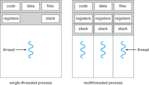

In general, Inter Process Communication is a type of mechanism usually provided by the operating system (or OS). The main aim or goal of this mechanism is to provide communications in between several processes. In short, the intercommunication allows a process letting another process know that some event has occurred.
"Inter-process communication is used for exchanging useful information between numerous threads in one or more processes (or programs)."
It is one of the essential parts of inter process communication. Typically, this is provided by interprocess communication control mechanisms, but sometimes it can also be controlled by communication processes.
These are the following methods that used to provide the synchronization:
It is generally required that only one process thread can enter the critical section at a time. This also helps in synchronization and creates a stable state to avoid the race condition
Semaphore is a type of variable that usually controls the access to the shared resources by several processes. Semaphore is further divided into two types which are as follows:
A barrier typically not allows an individual process to proceed unless all the processes does not reach it. It is used by many parallel languages, and collective routines impose barriers.
Spinlock is a type of lock as its name implies. The processes are trying to acquire the spinlock waits or stays in a loop while checking that the lock is available or not. It is known as busy waiting because even though the process active, the process does not perform any functional operation (or task).
These are a few different approaches for Inter- Process Communication:
The pipe is a type of data channel that is unidirectional in nature. It means that the data in this type of data channel can be moved in only a single direction at a time. Still, one can use two-channel of this type, so that he can able to send and receive data in two processes. Typically, it uses the standard methods for input and output. These pipes are used in all types of POSIX systems and in different versions of window operating systems as well.
It can be referred to as a type of memory that can be used or accessed by multiple processes simultaneously. It is primarily used so that the processes can communicate with each other. Therefore the shared memory is used by almost all POSIX and Windows operating systems as well.
In general, several different messages are allowed to read and write the data to the message queue. In the message queue, the messages are stored or stay in the queue unless their recipients retrieve them. In short, we can also say that the message queue is very helpful in inter-process communication and used by all operating systems.
It is a type of mechanism that allows processes to synchronize and communicate with each other. However, by using the message passing, the processes can communicate with each other without restoring the hared variables.
Usually, the inter-process communication mechanism provides two operations that are as follows:
In this type of communication process, usually, a link is created or established between two communicating processes. However, in every pair of communicating processes, only one link can exist.
Indirect communication can only exist or be established when processes share a common mailbox, and each pair of these processes shares multiple communication links. These shared links can be unidirectional or bi-directional.
It is a type of general communication between two unrelated processes. It can also be considered as full-duplex, which means that one process can communicate with another process and vice versa.
There are numerous reasons to use inter-process communication for sharing the data. Here are some of the most important reasons that are given below:
A thread is the subset of a process and is also known as the lightweight process. A process can have more than one thread, and these threads are managed independently by the scheduler. All the threads within one process are interrelated to each other. Threads have some common information, such as data segment, code segment, files, etc., that is shared to their peer threads. But contains its own registers, stack, and counter.

As we have discussed that a thread is a subprocess or an execution unit within a process. A process can contain a single thread to multiple threads. A thread works as follows:
There are two types of threads, which are:
As the name suggests, the user-level threads are only managed by users, and the kernel does not have its information. These are faster, easy to create and manage. The kernel takes all these threads as a single process and handles them as one process only. The user-level threads are implemented by user-level libraries, not by the system calls.
The kernel-level threads are handled by the Operating system and managed by its kernel. These threads are slower than user-level threads because context information is managed by the kernel. To create and implement a kernel-level thread, we need to make a system call.
A process is an instance of a program that is being executed. When we run a program, it does not execute directly. It takes some time to follow all the steps required to execute the program, and following these execution steps is known as a process.
A process can create other processes to perform multiple tasks at a time; the created processes are known as clone or child process, and the main process is known as the parent process. Each process contains its own memory space and does not share it with the other processes. It is known as the active entity. A typical process remains in the below form in memory.
A process in OS can remain in any of the following states:
When we start executing the program, the processor begins to process it. It takes the following steps:
| Process | Thread |
|---|---|
| A process is an instance of a program that is being executed or processed. | Thread is a segment of a process or a lightweight process that is managed by the scheduler independently. |
| Processes are independent of each other and hence don't share a memory or other resources. | Threads are interdependent and share memory. |
| Each process is treated as a new process by the operating system. | The operating system takes all the user-level threads as a single process. |
| If one process gets blocked by the operating system, then the other process can continue the execution. | If any user-level thread gets blocked, all of its peer threads also get blocked because OS takes all of them as a single process. |
| Context switching between two processes takes much time as they are heavy compared to thread. | Context switching between the threads is fast because they are very lightweight. |
| The data segment and code segment of each process are independent of the other. | Threads share data segment and code segment with their peer threads; hence are the same for other threads also. |
| The operating system takes more time to terminate a process. | Threads can be terminated in very little time. |